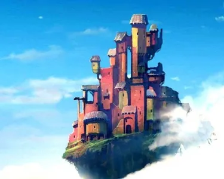
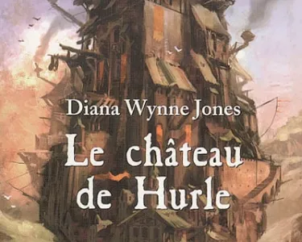

Le château ambulant
Le Château Ambulant," film d'animation de Hayao Miyazaki, s'inspire du roman...
In Hayao Miyazaki's "Howl moving castle", notable differences, notably the character of Sophie and the introduction of magic, bring a new dimension to the story, while war and the magical universe are at the heart of the plot. The film transcends its literary inspiration to create a cinematic work rich in magical themes and warmth, retaining its charm while adding a unique touch to the story.
Published today at 09:50.
Front cover of the book Howl moving castle
Le film d'animation "Howl moving castle", directed by Studio Ghibli's Hayao Miyazaki, is based on the novel "Howl Castle" by Diana Wynne Jones. While the film remains deeply faithful to the essence of the original work, it also introduces subtle nuances that give it its own identity and reflect Miyazaki's distinctive creativity.
One of the most notable differences is the character of Sophie, the story's heroine. In the novel, Sophie is a young woman who manages her father's hat store. This responsibility is a constant source of concern for her, and she is determined to maintain the success of the family business. In the film, however, Sophie's preoccupation with the hat store is put into perspective, at least initially. Her transformation into an old lady following a spell causes her to focus more on her own situation and her quest to break the spell that holds her back.
Front cover of the book Howl moving castle
Another striking aspect is the magic that is inherent in Sophie in the film, unlike in the novel. In Miyazaki's work, Sophie gradually discovers her own magical powers, adding an extra dimension to her character.
War is a central element of the film, and a recurring theme in many of Miyazaki's works. The war-torn landscape and armed conflicts play an important role in the story, reflecting Miyazaki's vision of the destructive consequences of conflict. The director approaches the subject with nuance, emphasizing the futility of violence and the necessity of peace. The ambiguous position of Hurle, who refuses to take sides in the conflict and prefers to stand aside, underlines the absurdity of war and its devastating impact on the distressed victims, often innocent inhabitants.

Front cover of the book Howl moving castle
In addition, the film explores the magical universe in detail, revealing the intricacies of magic, creatures and secondary characters, such as the other witches. This wealth of magical elements enriches the cinematic experience, offering viewers an enchanting world to explore.
In short, although "Howl Moving Castle" is rooted in Diana Wynne Jones' novel "Howl Moving Castle", it manages to capture the magical themes, complex characters and enchanting world, while adding its own distinctive touch. The differences, such as Sophie's preoccupation with the hat store, her magical powers, the presence of war, the characterization of Hurle, and the depth of the magical universe, bring additional richness to the story while retaining its warm, captivating heart. The film is thus a testament to Miyazaki's ability to take a source of inspiration and turn it into an unforgettable cinematic work.

Le château de hurle 1986
Roman Fantasy liant aventure et magie
Le château des nuages 1990
L’étonnante suite du château de hurle !
La maison aux mille détour 2008
3 ème et dernier livre de la série d’Hurle !
La Trilogie du Château de Hurle, créée par l'éminente autrice britannique Diana Wynne Jones, est un chef-d'œuvre de la littérature fantastique. Cette série enchanteresse, composée de trois romans - "Le Château de Hurle" (1986), "Le Château des Nuages" (1990), et "La Maison aux Magies" (1991), transporte les lecteurs dans un monde magique où la réalité se mêle à l'illusion. Avec des personnages mémorables et une intrigue captivante, cette trilogie est un incontournable du genre de la fantasy. Plongez dans ces mondes merveilleux et partez à l'aventure aux côtés de Sophie, Howl et Calcifer.
Les mondes de Chrestomanci, Tome 1
Ma soeur est une sorcière
Les mondes de Chrestomanci, Tome 2 1980
Les magiciens de caprona
Les mondes de Chrestomanci, Tome 3
La chasse aux sorciers
Les mondes de Chrestomanci, Tome 4
Les neufs vies du magicien
Les mondes de Chrestomanci, 2000
Edition spécial histoire courte Mixed Magics
Les mondes de Chrestomanci, Tome 5 2005
Les magiciens du conrad
Les mondes de Chrestomanci, Tome 6 2006
The pinhoe egg
Ces romans enchanteurs se déroulent dans des univers parallèles, où la magie est omniprésente et les aventures abondent. La série est une exploration captivante de la magie, du pouvoir, et de l'identité. Accompagnez les héros à travers des mondes fascinants, où les énigmes se résolvent et les sorts se tissent. Plongez dans cette série qui a conquis le cœur des lecteurs depuis plus de quatre décennies.
L'Odyssée DaleMark Tome 1 2009
Magie, quête, monde parallèle, aventure.
L'Odyssée DaleMark Tome 2 2009
Intrigue politique, voyage, mystère, révolution.
L'Odyssée DaleMark Tome 3 2010
Révolution, magie, pouvoir, destin, trahison.
L'Odyssée DaleMark Tome 4 2010
Découverte, réconciliation, héritage, avenir incertain.
Cette série, qui compte quatre tomes, plonge les lecteurs dans un monde complexe et mystérieux où la magie, l'intrigue politique, et l'héroïsme se rejoignent pour créer une expérience de lecture inoubliable. Au fil des pages, les lecteurs suivent des protagonistes aux destins entrelacés, explorant les profondeurs de Dalemark et ses multiples réalités. Les romans de "L'Odyssée de Dalemark" sont un exemple remarquable de la capacité de Diana Wynne Jones à tisser des mondes imaginaires riches et complexes, offrant un voyage littéraire enchanteur pour les amateurs de fantasy.
Le Terrible Seigneur des ténèbres, Livre premier
1998 ( 2021 en france )
Le Terrible Seigneur des ténèbres, Livre second
2022 en france
"Le Terrible Seigneur des Ténèbres", un roman en quatre tomes, transporte les lecteurs dans un univers envoûtant et mystérieux, où la magie, la politique, et l'héroïsme se conjuguent pour créer une expérience de lecture inoubliable. À travers les pages de cette série, les lecteurs seront captivés par des personnages dont les destins s'entremêlent, explorant les tréfonds du royaume des Ténèbres et ses réalités complexes. L'œuvre "Le Terrible Seigneur des Ténèbres" témoigne du talent extraordinaire de son auteur pour tisser des mondes imaginaires riches et sophistiqués, promettant un voyage littéraire ensorcelant pour les amateurs de fantasy.
Le Château Ambulant," film d'animation de Hayao Miyazaki, s'inspire du roman...